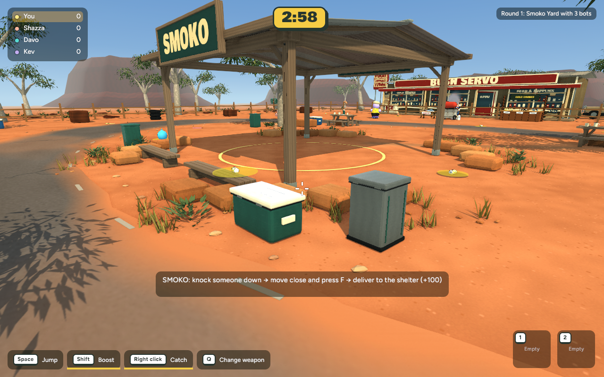
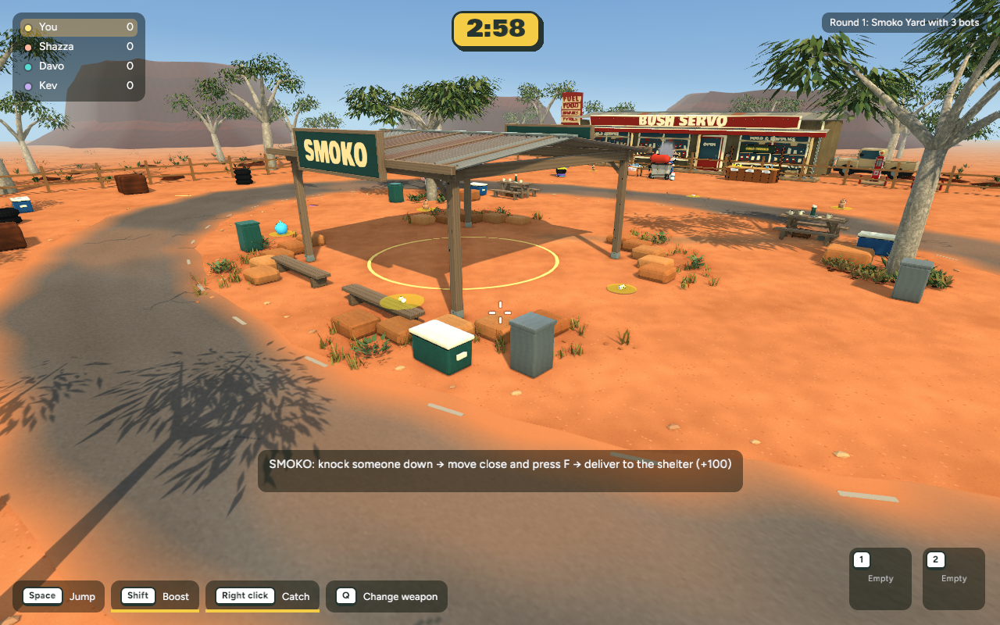
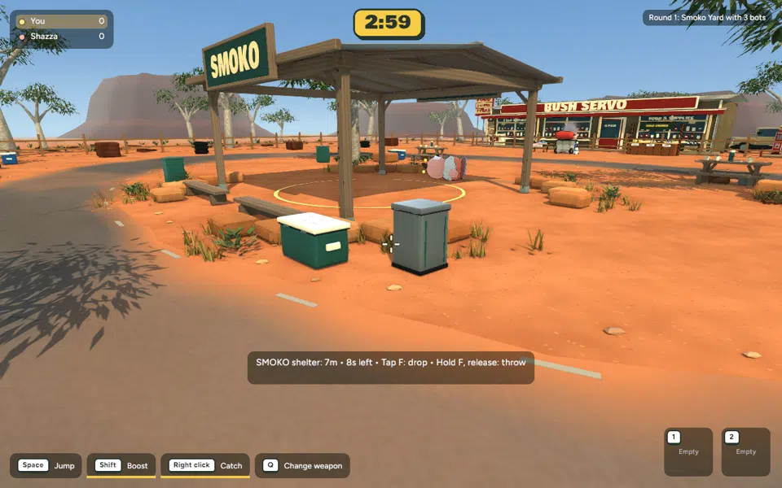
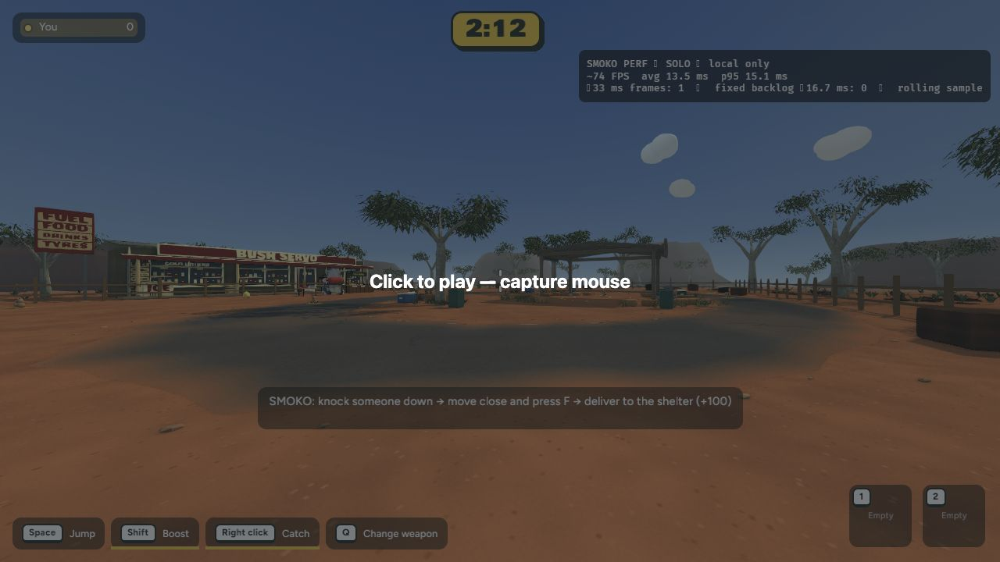

Actual implemented game · 6 November 2026 · Ready for review. Nothing committed or published.
One compact group: the green esky gains hinges, lid channels and recessed grip details; the bin gains a clearer lid seam, protective base, framed opening, hinges, rivets and pressed side seams. All inside original collision footprints; scoring area and carrying routes preserved. Other small props remain for later review.
Identical camera and capture frame.

Identical camera and capture frame.


Smoko carry-and-deliver fixture passed (+100, zero remaining carries); Backyard smoke passed.
Native close mean 8.485 → 8.365 ms; gameplay 8.599 → 8.588 ms. No meaningful regression in these samples. Adds 3,396 triangles and 279 KB; no new textures or material batches.
Browser measurements and limitations are recorded in the checkpoint. Stationary browser samples: about 74–75 FPS; mean 13.3 → 13.5 ms. Same apparent spawn view, independently started rounds; this does not establish multiplayer performance.

cd /Users/marcus/Claude/australian-bbq/rust ~/.cargo/bin/cargo run -p bbq_app --release -- --menu
Solo game → Bush Servo → Play Smoko. Inspect the green esky and bin beside the shelter.